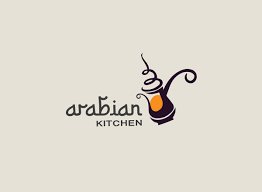

L’instant prime. Celui du partage et de la (re)découverte. Laurent Haller l’a bien compris. Au 7ème Continent, le chef de Rixheim mitonne minute, avec une spontanéité touchante : de la terre à l’assiette, en somme. Éclairant. Un nouveau chapitre. Une autre cuisine gastronomique se
dessine. Sur le terroir toujours. Avec plus de vivacité et de profondeur encore. La région nourrit les menus du restaurant. À coups de produits typiques et de recettes inspirées par les traditions d’ici. Chacun goûte les environs. Simplement.